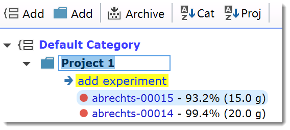
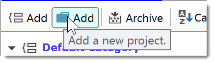
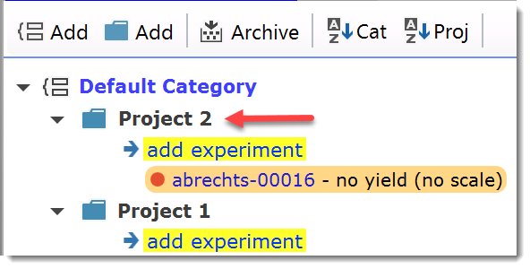
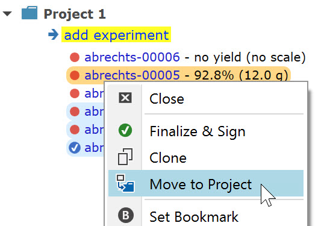

14) Add a New Project
By default, the first experiment created under a unique username (see previous section) is contained in a project folder titled 'Project 1', which is located within a project category (see next topic) titled 'Default Category'. Both folders can be renamed according to your needs at any time by clicking their title label twice in succession (first click to select it, second to start editing).

Espresso ELN organizes its experiments into projects, which in turn are summarized into project categories. Projects are designed to contain experiments within a logical context, e.g. synthetic sequences resulting the same target molecule. Project categories are described in the next topic.
|
Important: Make sure that a project does not contain too many (e.g. hundreds) of experiments, to get the best of the project auto-schemes, summary and search functionalities. If you are e.g. working on different synthetic approaches towards the same target molecule, then best create a project folder per main approach. |
Espresso ELN allows to create any number of project folders. Just click the 'Add Project' button in the toolbar above the experiments tree to add one.

This opens the dialog below, where the title of the new project can be entered. If several project categories are present, then the desired category for the new project can be selected from 'Project Category' dropdown menu. By default, the category to which the current experiment belongs to is selected.

A new project folder is added to the experiment tree and contains a first empty experiment:

|
Note: Project folders can't be deleted, since this would also delete the contained experiments. Therefore, if you created a project folder by accident, just keep it for later use and then rename it as appropriate. |
Experiments can be added to specific projects by clicking their "add experiment" link below the project header. If an experiment was created within the wrong project folder, it can be moved to another project at any time by right-clicking it and selecting the 'Move to Project' menu item:

Next step: Add a New Project Category ...